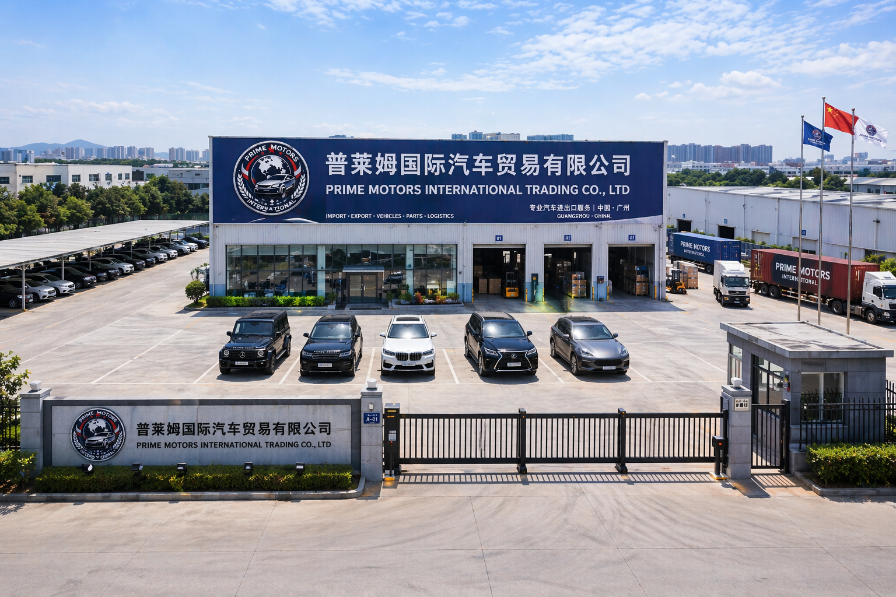

À Propos de Prime Motors International
Une entreprise spécialisée dans l’importation et la livraison internationale de véhicules depuis la Chine, la Turquie et Dubaï.
Une entreprise spécialisée dans l’importation et la livraison internationale de véhicules depuis la Chine, la Turquie et Dubaï.

Prime Motors International travaille avec des partenaires fiables dans plusieurs pays afin de proposer des solutions d’importation professionnelles adaptées aux besoins des particuliers et des entreprises.
Nous mettons l’accent sur la transparence, le suivi client et la sécurité des transactions. Chaque commande bénéficie d’un accompagnement sérieux depuis la recherche du véhicule jusqu’à la livraison finale.